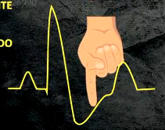
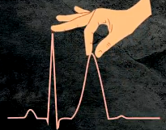
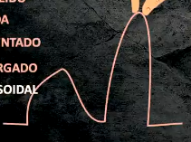

Equilíbrio hidroeletrolítico:
Osmolaridade:
-
Definição:

- Propriedade de cada solução;
- Gradiente que puxa água para a solução;
- Plasmática = 285 a 295 mOsm/L.
- Fórmula da osmolaridade:
- Osm TOTAL:
- 2 * Na + Glicemia/18 + Ureia/6;
- Osmolaridade EFETIVA:
- Desconsidera ureia;
- 2 * Na + glicemia/18.
- Osm TOTAL:
- Cuidado com as diferenças entre osmolaridade total e efetiva (pegadinha de prova).
-
Distúrbios do Sódio:
- São na verdade distúrbios da água corporal;
- A natremia não varia em paciente saudável — mecanismos compensatórios;
- A natremia é o principal determinante da osmolaridade;
- Mecanismos:
- Hipotálamo responde à osmolaridade;
- Ativa o centro da sede;
- Núcleo supraótico e paraventricular liberam ADH para reabsorver água — urina concentrada;
- Baixa osmolaridade suprime produção de ADH;
- Obs:
- ADH pode ser liberado por estímulos não osmóticos!!!!
Hiponatremia:
- Muita água para pouco sódio;
- Definição = Na < 135 mEq/L;
- Tipos:
- Hipotônica:
- Osmolaridade efetiva < 180 mOsm/L;
- É a mais comum;
- SNC:
- Neurônio tem mecanismo de compensação;
- Para evitar lise celular por edema, neurônio depura sódio (aprox. 48h);
- Depende muito do tempo de instalação de hiponatremia.
- Subtipos:
- Hipovolêmica:
- Vômito, diarreia, diurético, sangramento ou baixa aldosterona;
- Hipovolemia → aumento de ADH → diluição do sódio
- Hipervolêmica:
- ICC, cirrose, insuficiência renal.
- Euvolêmica:
- SIAD:
- Síndrome da antidiurese inapropriada;
- Osmolaridade urinária > 100 mOsm;
- Geralmente polidipsia primária.
- SIAD:
- Hipovolêmica:
- Hipertônica:
- Pode ser uma compensação pela hiperglicemia ou por manitol;
- Regra:
- Para cada 100 pontos de glicemia > 100mg, Na cai 2 mEqs.
- Isotônica:
- Geralmente erro laboratorial por hiperlipidemia ou hiperproteinemia.
- Hipotônica:
- Tratamentos:
- Hipotônica hipovolêmica:
- Restaurar a volemia.
- Hipotônica hipervolêmica:
- Se:
- Assintomáticos ou sintomas > 48h:
- Tratar causa;
- Restrição hídrica;
- Furosemida;
- Corrigir devagar:
- Limite seguro (Miller):
- Sintomas moderados:
- Confusão, letargia ou vômitos;
- Primeiras 3 a 4h = aumentar máx 1 mEq/L/h;
- Máx 10 mEq/L/dia.
- Sintomas graves:
- Coma ou convulsão;
- Bolus de 100ml até 3x, de 10 em 10 min, até melhora clínica.
- Sintomas moderados:
- Limite seguro (Miller):
- Sintomas < 48h:
- Salgadão (NaCl 3%).
- Assintomáticos ou sintomas > 48h:
- SALGADÃO:
- NaCl 3% = 3g em 100ml;
- 1g de NaCl equivale a 17 mEq de Na;
- 150ml de NaCl 20% em 850ml de ABD;
- Fórmula de correção:
- delta Na = [Na solução] - [Na do paciente]/ACT + 1
- ACT = água corporal total:
- 60% do peso em homens;
- 50% do peso em mulheres.
- Se:
- Hipertônica/Isotônica:
- Corrigir causa (geralmente glicemia).
- Hipotônica hipovolêmica:
Hipernatremia:
- Fisiologia:
- Pouca água para muito sódio — déficit de água livre;
- Definição = Na > 145 mEq/L;
- Osmolaridade sempre elevada! — toda hipernatremia é hipertônica!
- Desidratação neuronal:
- Confusão mental, letargia, convulsões, hiperreflexia.
- TTO:
-
Repor água livre;
-
Cálculo de déficit de água livre:

-
Correção também de no máximo 10 mEq/L/dia;
-
Correção rápida pode fazer edema cerebral.
-
- Causas:
- Iatrogênica:
- Soluções hipertônicas:
- Manitol, Bicarbonato.
- Soluções hipertônicas:
- Hiperaldosteronismo:
- Aumenta reabsorção de sódio.
- Perdas gastrointestinais;
- Diabetes insipidus:
- Fisiologia:
- Urina extremamente diluída;
- ADH não funciona:
- Central:
- Pós cx de ressecção de hipófise.
- Periférico/Nefrogênico.
- Central:
- Apresentação:
- Desidratação, poliúria, polidipsia intensa;
- Hipernatremia, hiperosmolaridade;
- Urina hipotônica (< 300 mOsm/L).
- Diferenciação:
- Teste terapêutico com Vasopressina (DDAVP):
- Nefrogênico não responde.
- Teste terapêutico com Vasopressina (DDAVP):
- Fisiologia:
- Iatrogênica:
Potássio:
- 98% intracelular;
- Função no potencial transmembrana;
- Regulação:
- Insulina:
- Estimula influxo de K+.
- Adrenalina:
- Principalmente beta 2;
- Influxo de K+.
- Aldosterona:
- Espolia K+.
- pH:
- H+ livre troca de lugar com K+ na célula;
- Acidose aumenta K+ do soro;
- Alcalose diminui.
- Insulina:
- Relação com Mg++:
- Hipomagnesemia estimula secreção de K+ no túbulo distal.
Hipocalemia:
- Definição = K+ < 3,5 mEq/L;
- Apresentação:
-
Extrassístoles, FA, flutter, torsades, TV, FV;
-
ECG:


- Onda T achatada;
- Infra de ST;
- Surgimento de onda U;
- QRS alargado.
-
- Tratamento:
- Repor potássio;
- Velocidade máxima de reposição:
- 0,5 mEq/kg/h ou 40 mEq/h.
- Concentração máxima da solução de KCl:
- Acesso periférico = 40 mEq/L;
- Central = 60 mEq/L.
Hipercalemia:
- Definição = K+ > 5,5 mEq/L;
- Apresentação:
-
Fraqueza, paralisia, alteração de condução cardíaca;
-
ECG:



- Onda T apiculada (em tenda);
- Redução do intervalo QT;
- Aumento de intervalo PR;
- Achatamento de onda P;
- QRS alargado → onda sinusoidal.
-
- TTO:
- Alteração de ECG:
- MANDATÓRIO REPOR CÁLCIO;
- Proteção miocárdica.
- Opções:
- Glicoinsulina;
- B2 agonista;
- Bicarbonato:
- Aumenta pH → esconde K+.
- Furosemida;
- Sorcal;
- Hemodiálise.
- Alteração de ECG: